Politics
 X
X
Government & Politics
Ghana is a unitary presidential constitutional democracy with a parliamentary multi-party system that is dominated by two parties the National Democratic Congress (NDC) and the New Patriotic Party (NPP).
Ghana vacillated between civilian and military governments until January 1993, when the military government gave way to the Fourth Republic of Ghana after presidential and parliamentary elections in late 1992. The 1992 constitution of Ghana divides powers among a Commander-in-Chief of the Ghana Armed Forces (President of Ghana), parliament (Parliament of Ghana), cabinet (Cabinet of Ghana), the council of state (Ghanaian Council of State), and an independent judiciary (Judiciary of Ghana). The Government of Ghana is elected by universal suffrage after every four years.
Executive branch
| Office | Name | Party | Term |
|---|---|---|---|
| President | Nana Akufo-Addo |
New Patriotic Party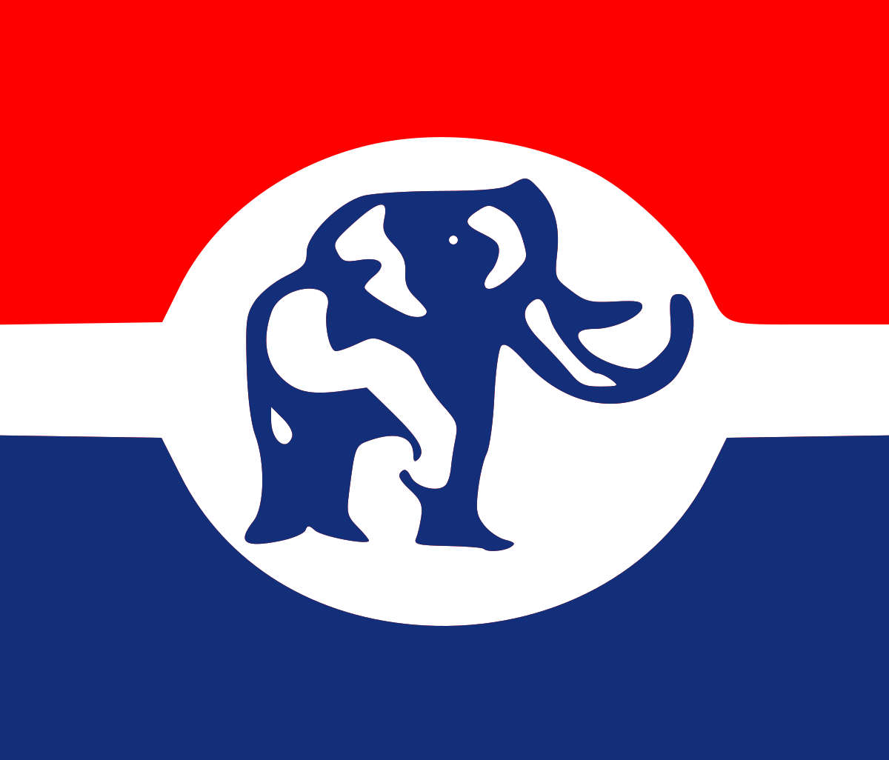 | 7 January 2017 |
| Vice President | Mahamudu Bawumia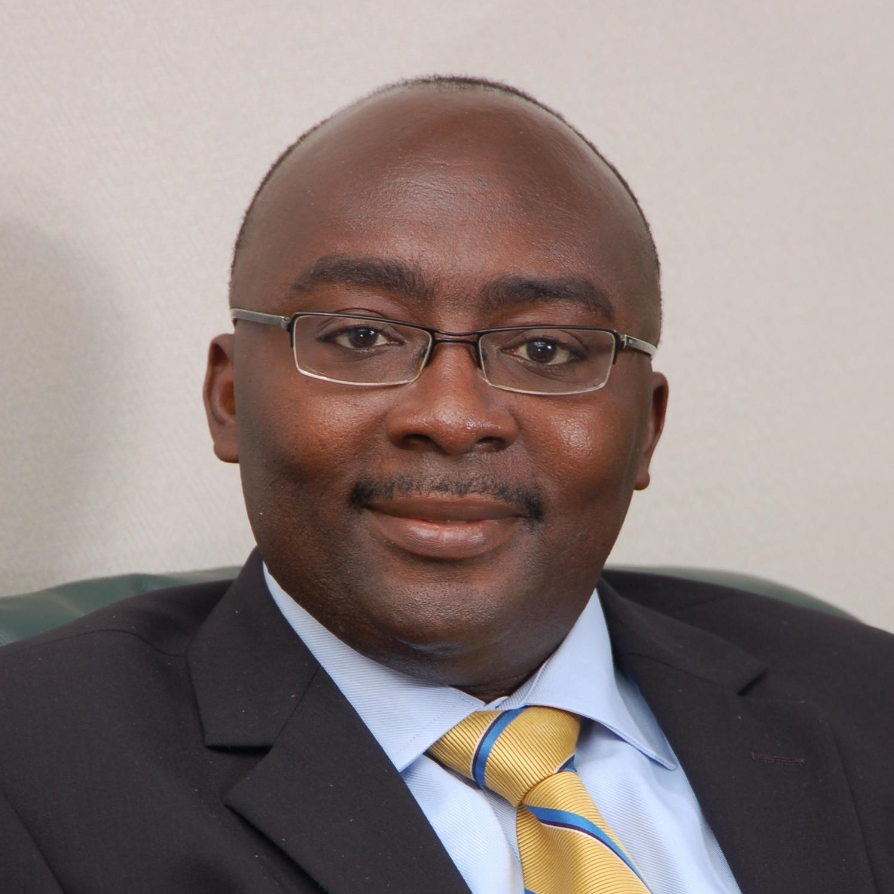 |
Nana Akufo-Addo holds the office of Presidency, in tandem with his Council of State. The president is the head of state, head of government, and commander in chief of the armed forces. He also selects the vice president. According to the Constitution, more than half of the presidentially appointed ministers of state must be selected from among members of Parliament.
Legislative branch
Legislative functions reside in the Parliament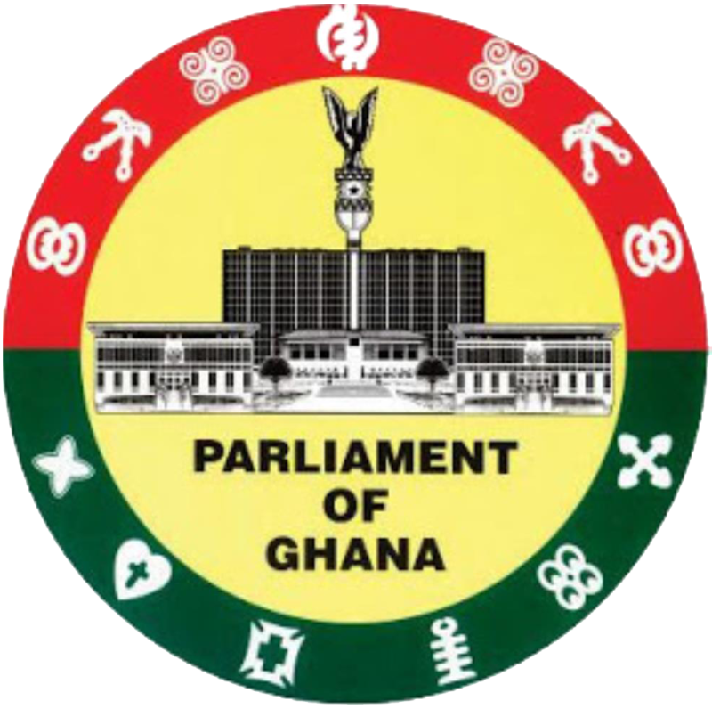, which is comprised of a unicameral 275-member body plus the Speaker. In order for laws to be enacted, legislation must have the approval of the president. Additionally, the president has qualified veto over all bills except those to which a vote of urgency is attached. Members are elected for a four-year term in single-seat constituencies by simple plurality vote. This voting system epitomizes Duverger's law, which asserts that single-ballot majoritarian elections with single-member districts are inclined to favor a two-party system.
Consequently, with this voting system in place, it has confined Ghanaian politics into a two-party system, which means that there are two dominant political parties, which makes it extremely daunting for anybody to achieve electoral success under the banner of any other party. Elections have been held every four years since 1992. Presidential and parliamentary elections are held alongside each other, generally on 7 December.
Judicial branch
The structure and the power of the judicial branch is independent of the two other branches of government. The Judiciary of Ghana is responsible for interpreting, applying, and enforcing the laws of Ghana, and exists to settle legal conflicts fairly and in a more adequate way. The Supreme Court of Ghana has broad powers of judicial review. It is authorized by the Constitution to rule on the constitutionality of any legislation or executive action at the request of any aggrieved citizen.
The hierarchy of courts derives largely from British juridical forms. The courts have jurisdiction over all civil and criminal matters. They include the Superior Courts of Judicature, established under the 1992 Constitution, and the Inferior Courts, established by Parliament. The Superior Courts are, from highest to lowest, the Supreme Court of Ghana, the Court of Appeal, the High Court of Justice, and the ten Regional Tribunals. The Inferior Courts, since the Courts Act 2002, include the Circuit Courts, the Magistrate Courts, and special courts such as the Juvenile Courts. In 2007, Georgina Wood became the first ever female chief justice of the Ghanaian Supreme Court.
became the first ever female chief justice of the Ghanaian Supreme Court.
List of Heads of State
This is a list of the heads of state of Ghana, from the independence of Ghana in 1957 to the present day. From 1957 to 1960 the head of state under the Constitution of 1957 was the queen of Ghana, Elizabeth II, who was simultaneously queen of the United Kingdom and the other Commonwealth realms. The monarch was represented in Ghana by a governor-general. Ghana became a republic within the Commonwealth under the Constitution of 1960 and the monarch and governor-general were replaced by an executive president.
Monarch (1957–1960)
| No. | Name | Portrait | Reign | Royal House | Prime Minister |
|---|---|---|---|---|---|
| 1 | Queen Elizabeth II | 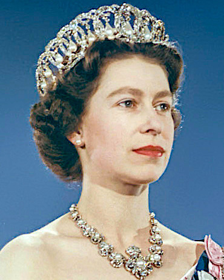 |
6 March 1957 - 1 July 1960
3 years, 117 days |
Windsor |
Nkrumah |
Governor General
The governor-general was the representative of the monarchy in Ghana and exercised most of the powers of the monarch. The governor-general was appointed for an indefinite term, serving at the pleasure of the monarch.
| No. | Name | Portrait | Term in Office | Royal House | Prime Minister |
|---|---|---|---|---|---|
| 1 | Sir Charles Arden-Clarke | 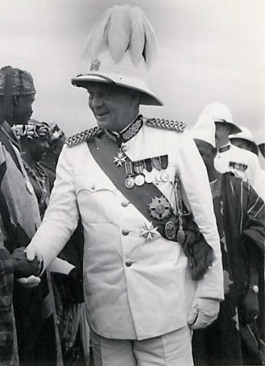 |
6 March 1957 - 14 May 1957
69 days |
Queen Elizabeth II | Nkrumah |
| 2 | Kobina Arku Korsah | 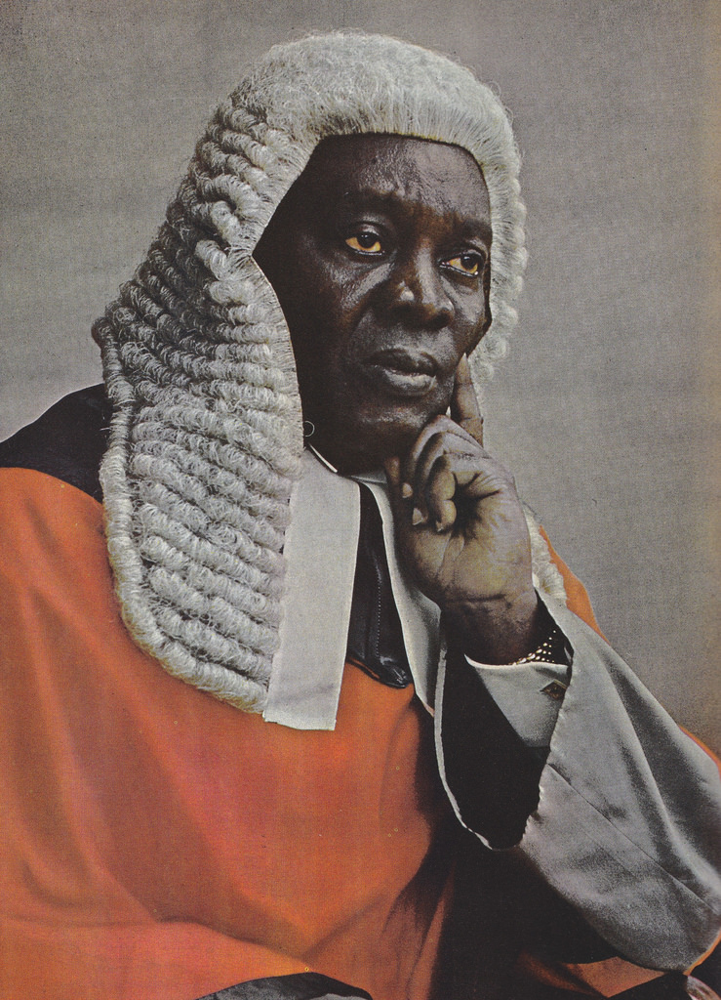 |
14 May 1957 - 13 November 1957
183 days |
||
| 3 | The Rt. Hon. The Earl of Listowel | 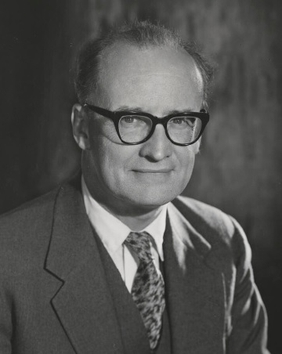 |
13 November 1957 - 1 July 1960
2 years, 231 days |
First Republic (1960–1966)
Under the Constitution of 1960, the first constitution of the Republic of Ghana, the president replaced the monarch as the executive head of state. The president was elected by Parliament for a 5-year term. In the event of a vacancy, three members of the Cabinet served jointly as acting president.
| No. | Name | Portrait | Term in Office | Political Party |
|---|---|---|---|---|
| 2 | Kwame Nkrumah | 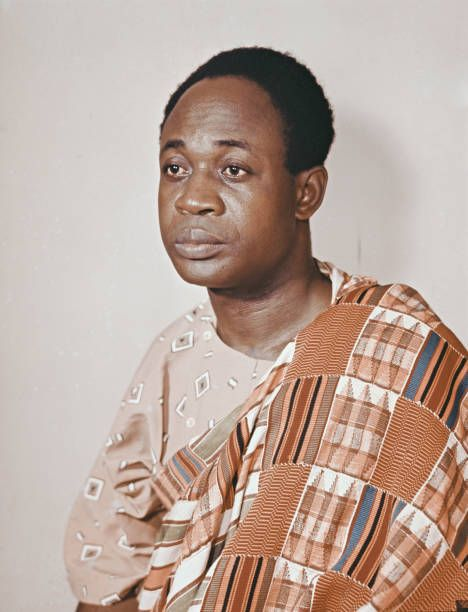 |
1 July 1960 - 26 February 1966 (deposed)
5 years, 240 days |
Convention People's Party |
Military rule (1966–1969)
Lieutenant-General Joseph Arthur Ankrah led a coup d'état that overthrew President Nkrumah and his government, and all political parties and Parliament became obsolete.
| No. | Name | Portrait | Term in Office | Political Party |
|---|---|---|---|---|
| 3 | Lieutenant-General Joseph Arthur Ankrah | 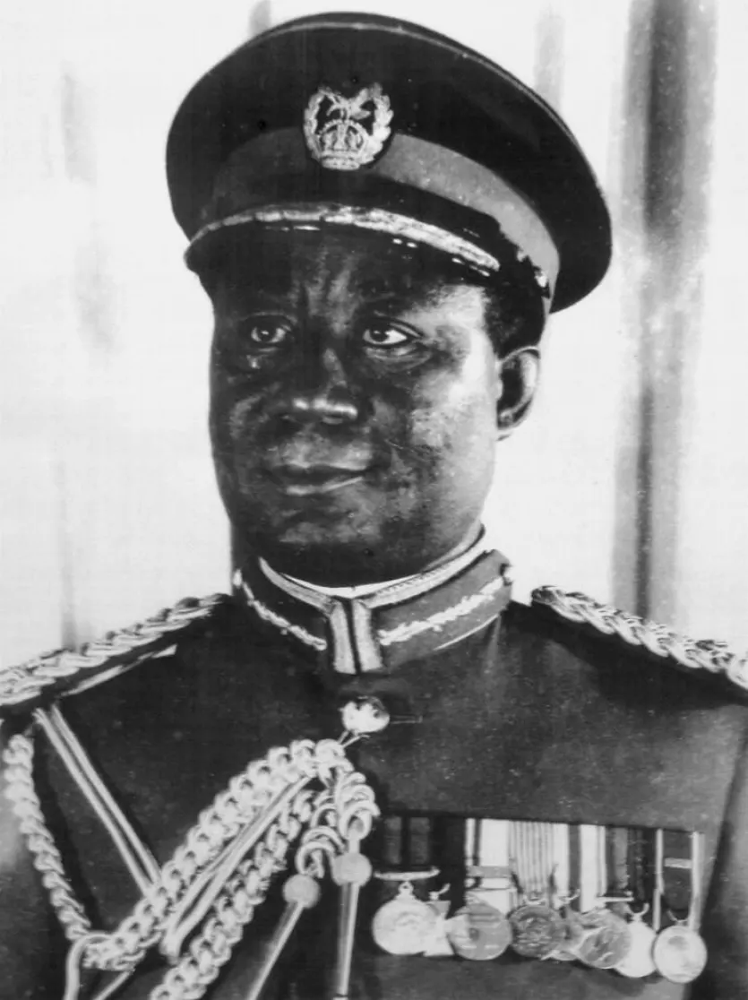 |
24 February 1966 - 2 April 1969 (resigned)
3 years, 37 days |
Military |
| 4 | Brigadier Akwasi Afrifa | 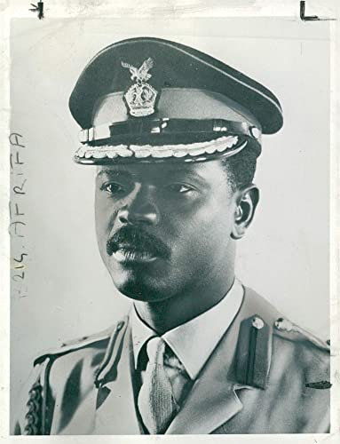 |
2 April 1969 - 3 September 1969
154 days |
Second Republic (1969–1972)
Ghana's government returned to civilian authority under the Second Republic in October 1969 after a parliamentary election in which the Progress Party, primarily led by Kofi A. Busia, won 105 of the 140 seats. Until mid-1970, the powers of the chief of state resided within the presidential commission led by Brigadier A.A. Afrifa.
| No. | Name | Portrait | Term in Office | Political Party | Prime Minister |
|---|---|---|---|---|---|
| 4 | Brigadier Akwasi Afrifa |
3 September 1969 - 7 August 1970
338 days |
Military | Busia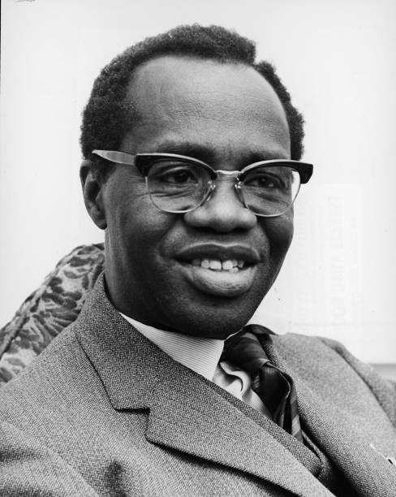 | |
| - | Nii Amaa Ollennua |  |
7 August 1970 - 31 August 1970
24 days |
Independent | |
| 5 | Edward Akufo-Addo | 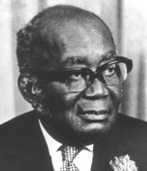 |
31 August 1970 - 13 January 1972 (deposed)
1 year, 135 days |
Military rule (1972–1979)
General Ignatius Kutu Acheampong led a coup d'état which overthrew President Akufo-Addo, Prime Minister Abrefa Busia and his government, all political parties, and Parliament were also deposed. Lieutenant General Fred Akuffo led a coup d'état that overthrew General Acheampong, then Flight Lieutenant Jerry Rawlings led a coup d'état that overthrew the Supreme Military Council.
| No. | Name | Portrait | Term in Office | Political Party |
|---|---|---|---|---|
| 6 | General Ignatius Kutu Acheampong |  |
13 January 1972 - 5 July 1978 (deposed)
6 years, 173 days |
Military |
| 7 | Lieutenant-General Fred Akuffo | 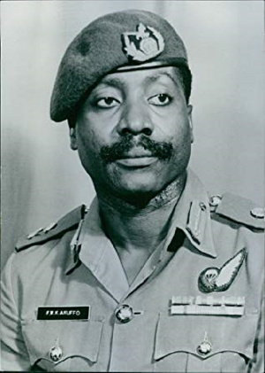 |
5 July 1978 - 4 June 1979 (deposed)
334 days |
|
| 8 | Flight Lieutenant Jerry Rawlings | 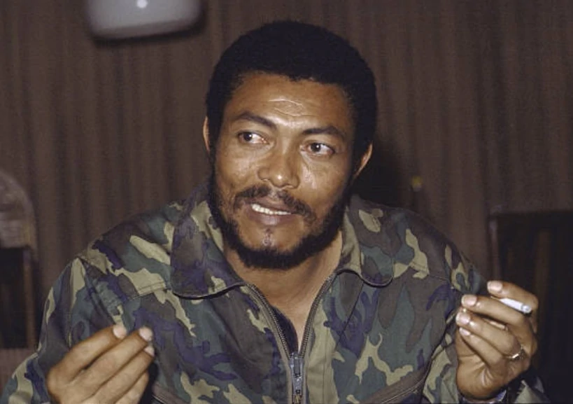 |
4 June 1979 - 24 September 1979
112 days |
Third Republic (1979–1981)
Under the Constitution of 1979, the president was head of both state and government. The president was directly elected and served a four-year term that ended at the next general election; a president might serve a maximum of two terms. In the event of a vacancy, the vice president served as acting president.
| No. | Name | Portrait | Term in Office | Political Party |
|---|---|---|---|---|
| 9 | Hilla Limann |  |
24 September 1979 - 31 December 1981 (deposed)
2 years, 98 days |
People's National Party |
Military rule (1981–1993)
Flight Lieutenant Jerry Rawlings led a coup d'état that overthrew President Limann and his government, all political parties and Parliament were also dissolved.
| No. | Name | Portrait | Term in Office | Political Party |
|---|---|---|---|---|
| (8) | Flight Lieutenant Jerry Rawlings |
31 December 1981 - 7 January 1993
11 years, 7 days |
Military |
Fourth Republic (1993–present)
The current Constitution of Ghana follows the same precedent as the constitution of 1979 which states that the president is head of both state and government. The president is directly elected and serves a four-year term that expires at the next general election; a president may serve a maximum of two terms. In the event of a vacancy, the vice president serves the remaining time as the president.
| No. | Name | Portrait | Term in Office | Political Party |
|---|---|---|---|---|
| (8) | Flight Lieutenant Jerry Rawlings |
7 January 1993 - 7 January 2001
8 years |
National Democratic Congress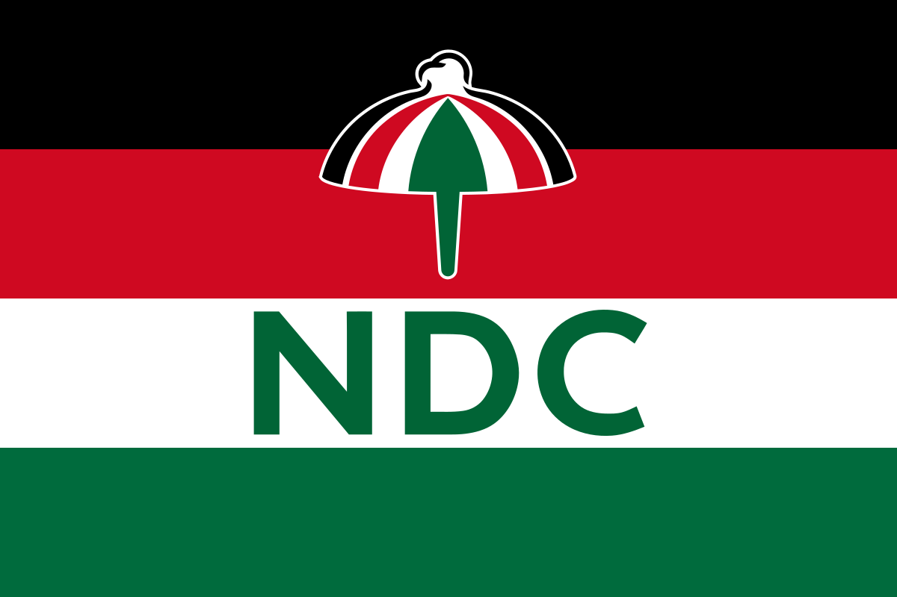 | |
| 10 | John Kufuor | 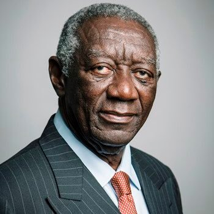 |
7 January 2001 - 7 January 2009
8 years |
New Patriotic Party |
| 11 | John Atta Mills |  |
7 January 2009 - 24 July 2012 (died in office)
3 years, 199 days |
National Democratic Congress |
| 12 | John Mahama | .jpg) |
24 July 2012 - 7 January 2017
4 years, 167 days |
|
| 13 | Nana Akufo-Addo | |
7 January 2017 - current
5 years, 259 days |
New Patriotic Party |
Political Parties
Ghana has been dominated by two parties the National Democratic Congress (NDC) and the New Patriotic Party (NPP). Although, there have been other parties that emerged in the past these parties lacked the advocacy of the Ghanaian people and eventually became obsolete.
National Democratic Congress (NDC)
The National Democratic Congress (NDC) is a social democratic political party in Ghana, founded by Jerry Rawlings, who served as Head of State of Ghana from 1981 to 1993 and the President of Ghana from 1993 to 2001. Following the formation of the Provisional National Defence Council (PNDC), which ruled Ghana following the military coup d'état of Ignatius Kutu Acheampong's government on 31 December 1981. Consequently, there was pressure from the international community to restore democracy. The NDC was conceived as the ruling party ahead of elections in 1992, in which Rawlings was elected president, and in 1996 Rawlings was re-elected as the NDC candidate. Rawlings' second term ended in 2001.
New Patriotic Party (NPP)
The New Patriotic Party (NPP) is a center-right and liberal-conservative political party in Ghana. Since the democratization of Ghana in 1992, it has been one of the two dominant parties in Ghanaian politics, with its primary rival being the National Democratic Congress (NDC). John Kufuor of the NPP was President of Ghana from 2001 to 2009 following the Rawlings Administration (NDC). In Ghana presidential terms last for 4 years with a maximum of two terms that can be served, thus Kufor was re-elected on 7 December 2004, and the NPP won 129 out of 230 seats.